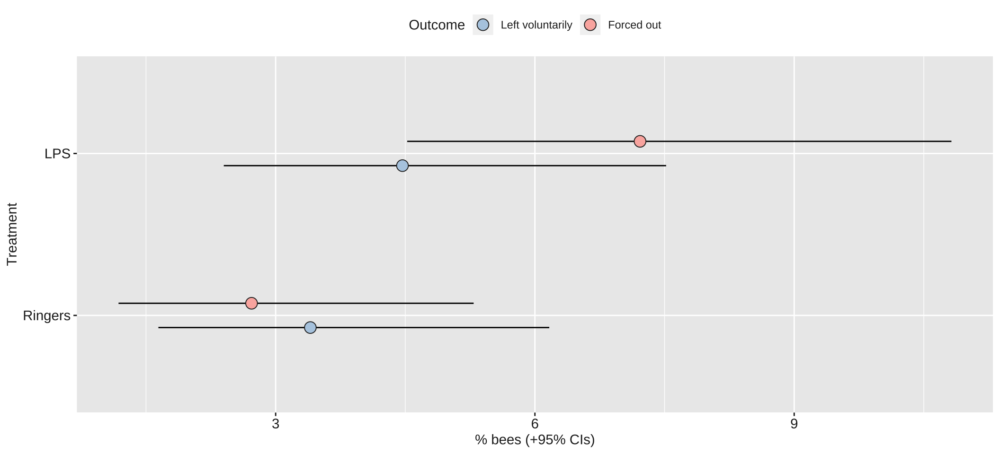
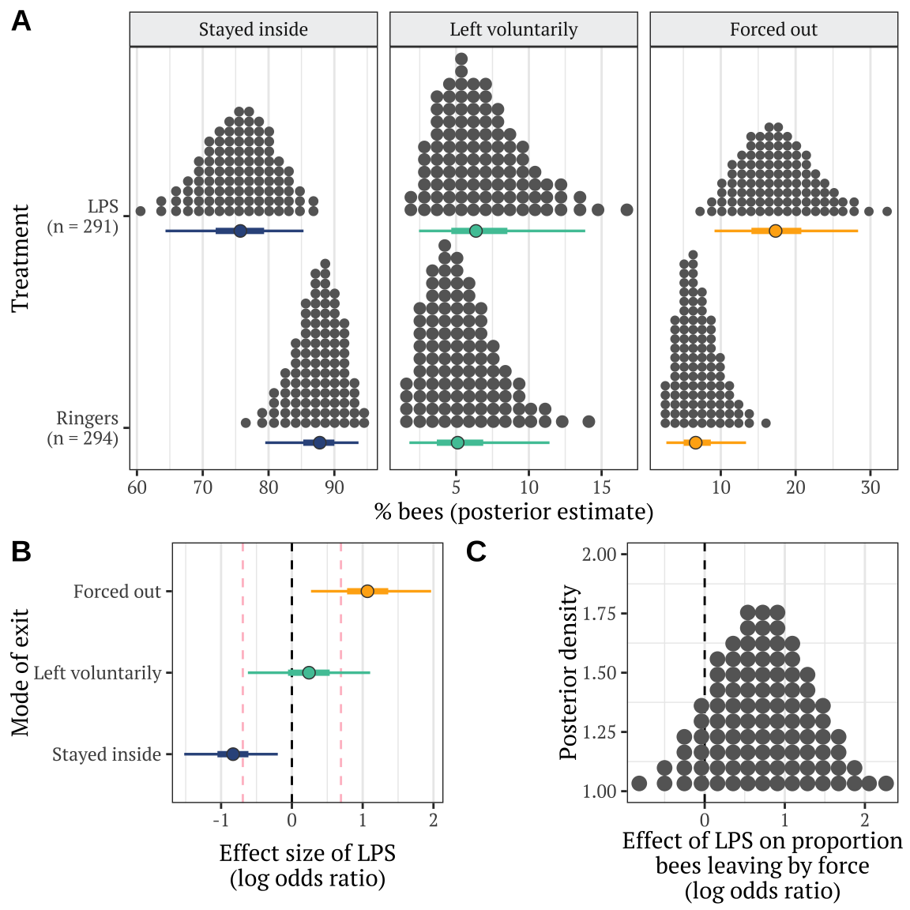

Last updated: 2020-04-30
Checks: 6 1
Knit directory: social_immunity/
This reproducible R Markdown analysis was created with workflowr (version 1.6.0). The Checks tab describes the reproducibility checks that were applied when the results were created. The Past versions tab lists the development history.
The R Markdown file has unstaged changes. To know which version of the R Markdown file created these results, you’ll want to first commit it to the Git repo. If you’re still working on the analysis, you can ignore this warning. When you’re finished, you can run wflow_publish to commit the R Markdown file and build the HTML.
Great job! The global environment was empty. Objects defined in the global environment can affect the analysis in your R Markdown file in unknown ways. For reproduciblity it’s best to always run the code in an empty environment.
The command set.seed(20191017) was run prior to running the code in the R Markdown file. Setting a seed ensures that any results that rely on randomness, e.g. subsampling or permutations, are reproducible.
Great job! Recording the operating system, R version, and package versions is critical for reproducibility.
Nice! There were no cached chunks for this analysis, so you can be confident that you successfully produced the results during this run.
Great job! Using relative paths to the files within your workflowr project makes it easier to run your code on other machines.
These are the previous versions of the R Markdown and HTML files. If you’ve configured a remote Git repository (see ?wflow_git_remote), click on the hyperlinks in the table below to view them.
| File | Version | Author | Date | Message |
|---|---|---|---|---|
| html | d6437a5 | lukeholman | 2020-04-25 | Build site. |
| html | e58e720 | lukeholman | 2020-04-25 | Build site. |
| html | 71b6160 | lukeholman | 2020-04-25 | Build site. |
| Rmd | 76a317d | lukeholman | 2020-04-25 | tweaks |
| html | 2235ae4 | lukeholman | 2020-04-25 | Build site. |
| Rmd | 99649a7 | lukeholman | 2020-04-25 | tweaks |
| html | 99649a7 | lukeholman | 2020-04-25 | tweaks |
| html | 0ede6e3 | lukeholman | 2020-04-24 | Build site. |
| Rmd | a1f8dc2 | lukeholman | 2020-04-24 | tweaks |
| html | 8c3b471 | lukeholman | 2020-04-21 | Build site. |
| Rmd | 1ce9e19 | lukeholman | 2020-04-21 | First commit 2020 |
| html | 1ce9e19 | lukeholman | 2020-04-21 | First commit 2020 |
| Rmd | aae65cf | lukeholman | 2019-10-17 | First commit |
| html | aae65cf | lukeholman | 2019-10-17 | First commit |
| treatment | n |
|---|---|
| Ringers | 294 |
| LPS | 291 |
| hive | treatment | n |
|---|---|---|
| Arts | Ringers | 70 |
| Arts | LPS | 68 |
| Garden | Ringers | 75 |
| Garden | LPS | 75 |
| Skylab | Ringers | 99 |
| Skylab | LPS | 100 |
| Zoology | Ringers | 50 |
| Zoology | LPS | 48 |
| hive | treatment | outcome | n |
|---|---|---|---|
| Arts | LPS | Stayed inside | 56 |
| Arts | LPS | Left voluntarily | 5 |
| Arts | LPS | Forced out | 7 |
| Arts | Ringers | Stayed inside | 64 |
| Arts | Ringers | Left voluntarily | 5 |
| Arts | Ringers | Forced out | 1 |
| Garden | LPS | Stayed inside | 70 |
| Garden | LPS | Left voluntarily | 2 |
| Garden | LPS | Forced out | 3 |
| Garden | Ringers | Stayed inside | 73 |
| Garden | Ringers | Left voluntarily | 2 |
| Garden | Ringers | Forced out | 0 |
| Skylab | LPS | Stayed inside | 93 |
| Skylab | LPS | Left voluntarily | 2 |
| Skylab | LPS | Forced out | 5 |
| Skylab | Ringers | Stayed inside | 97 |
| Skylab | Ringers | Left voluntarily | 1 |
| Skylab | Ringers | Forced out | 1 |
| Zoology | LPS | Stayed inside | 38 |
| Zoology | LPS | Left voluntarily | 4 |
| Zoology | LPS | Forced out | 6 |
| Zoology | Ringers | Stayed inside | 42 |
| Zoology | Ringers | Left voluntarily | 2 |
| Zoology | Ringers | Forced out | 6 |
Error in get(S3[i, 1L], mode = "function", envir = parent.frame()) :
invalid first argument
| Version | Author | Date |
|---|---|---|
| 1ce9e19 | lukeholman | 2020-04-21 |
Fit a multinomial logisitic model, with 3 possible outcomes describing what happened to each bee introduced to the hive: stayed inside, left of its own volition, or forced out by the other workers. To assess the effects of our predictor variables, we compare 5 models with different fixed factors, ranking them by posterior model probability.
| Model | post_prob |
|---|---|
| hive + observation_time_minutes | 0.530 |
| treatment + hive + observation_time_minutes | 0.466 |
| treatment * hive + observation_time_minutes | 0.003 |
The code chunk below wrangles the raw output of the summary() functions for brms models into a more readable table of results, and also adds ‘Bayesian p-values’ (i.e. the posterior probability that the true effect size has the same sign as the reported effect).
| Parameter | Estimate | Est. Error | Lower 95% CI | Upper 95% CI | p | |
|---|---|---|---|---|---|---|
| % bees leaving voluntarily | ||||||
| Intercept | -6.368 | 6.669 | -19.689 | 6.679 | 0.168 | |
| Treatment: LPS | 0.377 | 0.439 | -0.480 | 1.245 | 0.197 | |
| hive1 | 0.111 | 1.522 | -2.868 | 3.075 | 0.466 | |
| hive2 | -0.183 | 0.679 | -1.513 | 1.160 | 0.390 | |
| hive3 | 0.082 | 2.531 | -4.835 | 5.113 | 0.491 | |
| Observation duration (minutes) | 0.029 | 0.068 | -0.103 | 0.165 | 0.337 | |
| % bees forced out | ||||||
| Intercept | -5.179 | 6.708 | -18.321 | 7.894 | 0.222 | |
| Treatment: LPS | 1.105 | 0.433 | 0.291 | 1.989 | 0.004 | ** |
| hive1 | -0.030 | 1.544 | -3.059 | 2.971 | 0.490 | |
| hive2 | -0.847 | 0.705 | -2.266 | 0.490 | 0.112 | |
| hive3 | 0.049 | 2.554 | -4.892 | 5.089 | 0.493 | |
| Observation duration (minutes) | 0.015 | 0.069 | -0.118 | 0.149 | 0.414 | |
Table S3: Table summarising the posterior estimates of each fixed effect in the best-fitting model of Experiment 2. This was a multinomial model with three possible outcomes (stay inside, leave voluntarily, be forced out), and so there are two parameter estimates for the intercept and for each predictor in the model. ‘Treatment’ is a fixed factor with two levels, and the effect of LPS shown here is expressed relative to the ‘Ringers’ treatment. ‘Hive’ was a fixed factor with four levels; unlike for treatment, we modelled hive using deviation coding, such that the intercept term represents the mean across all hives (in the Ringers treatment), and the three hive terms represent the deviation from this mean for three of the four hives. Lastly, observation duration was a continuous variable expressed to the nearest minute. The \(p\) column gives the posterior probability that the true effect size is opposite in sign to what is reported in the Estimate column, similarly to a \(p\)-value.
Error in get(S3[i, 1L], mode = "function", envir = parent.frame()) :
invalid first argumentError in get(S3[i, 1L], mode = "function", envir = parent.frame()) :
invalid first argument
The dashed lines mark \(LOR = 0\), indicating no effect, and \(LOR = \pm log(2)\), i.e. the point at which the odds are twice as high in one treatment as the other.
This section calculates the posterior difference in treatment group means, in order to perform some null hypothesis testing, calculate effect size, and calculate the 95% credible intervals on the effect size. In all cases, the effect size expresses the effect of the “LPS-treated bee CHCs” treatment relative to the “Ringer-treated bee CHCs” control.
| Metric | Estimate | Est.Error | Q2.5 | Q97.5 | p | |
|---|---|---|---|---|---|---|
| % bees staying inside | ||||||
| Absolute difference in % bees staying inside | -11.949 | 4.942 | -22.208 | -2.753 | ||
| Log odds ratio | -0.836 | 0.331 | -1.520 | -0.199 | 0.0048 | ** |
| % bees leaving voluntarily | ||||||
| Absolute difference in % bees leaving voluntarily | 1.335 | 2.623 | -3.720 | 7.086 | ||
| Log odds ratio | 0.242 | 0.440 | -0.621 | 1.106 | 0.2881 | |
| % bees forced out | ||||||
| Absolute difference in % bees forced out | 10.614 | 4.627 | 2.538 | 20.464 | ||
| Log odds ratio | 1.079 | 0.433 | 0.270 | 1.967 | 0.0047 | ** |
Table S4: This table gives statistics associated with each of the contrasts plotted in Figure 2B. Each pair of rows gives the absolute and standardised effect size (as log odds ratio; LOR) for the LPS treatment, relative to the Ringers treatment, for one of the three possible outcomes (stayed inside, left voluntarily, or forced out). A LOR of \(|log(x)|\) indicates that the outcome is \(x\) times more frequent in one treatment compared to the other, e.g. \(log(2) = 0.69\) indicates a two-fold difference in frequency. The \(p\) column gives the posterior probability that the true effect size has the same sign as is shown in the Estimate column; this metric has a similar interpretation to a one-tailed \(p\) value in frequentist statistics.
Here, we derive the result present in prose in the Results, that the true effect size
[1] 0.5837[1] 0.8323[1] 0.0557[1] 0.187Here, we derive the result presented in prose in the Results, regarding the effect of LPS on the proportion of bees that left the hive by force.
Hypothesis Estimate Est.Error CI.Lower CI.Upper Evid.Ratio Post.Prob Star
1 (x) > 0 0.7281842 0.5984938 -0.2336917 1.712823 8.082652 0.8899
R version 3.6.3 (2020-02-29)
Platform: x86_64-apple-darwin15.6.0 (64-bit)
Running under: macOS Catalina 10.15.4
Matrix products: default
BLAS: /Library/Frameworks/R.framework/Versions/3.6/Resources/lib/libRblas.0.dylib
LAPACK: /Library/Frameworks/R.framework/Versions/3.6/Resources/lib/libRlapack.dylib
locale:
[1] en_AU.UTF-8/en_AU.UTF-8/en_AU.UTF-8/C/en_AU.UTF-8/en_AU.UTF-8
attached base packages:
[1] stats graphics grDevices utils datasets methods base
other attached packages:
[1] cowplot_1.0.0 tidybayes_2.0.1 bayestestR_0.5.1 kableExtra_1.1.0
[5] gridExtra_2.3 forcats_0.5.0 stringr_1.4.0 dplyr_0.8.5
[9] purrr_0.3.3 readr_1.3.1 tidyr_1.0.2 tibble_3.0.0
[13] ggplot2_3.3.0 tidyverse_1.3.0 bayesplot_1.7.1 brms_2.12.0
[17] Rcpp_1.0.4.6 showtext_0.7-1 showtextdb_2.0 sysfonts_0.8
[21] thematic_0.0.1
loaded via a namespace (and not attached):
[1] colorspace_1.4-1 ellipsis_0.3.0 ggridges_0.5.2
[4] rsconnect_0.8.16 rprojroot_1.3-2 markdown_1.1
[7] base64enc_0.1-3 fs_1.4.1 rstudioapi_0.11
[10] farver_2.0.3 bootstraplib_0.1.0.9000 rstan_2.19.3
[13] svUnit_0.7-12 DT_0.13 fansi_0.4.1
[16] mvtnorm_1.1-0 lubridate_1.7.8 xml2_1.3.1
[19] bridgesampling_1.0-0 knitr_1.28 shinythemes_1.1.2
[22] jsonlite_1.6.1 workflowr_1.6.0 broom_0.5.4
[25] dbplyr_1.4.2 shiny_1.4.0 compiler_3.6.3
[28] httr_1.4.1 backports_1.1.6 assertthat_0.2.1
[31] Matrix_1.2-18 fastmap_1.0.1 cli_2.0.2
[34] later_1.0.0 htmltools_0.4.0.9003 prettyunits_1.1.1
[37] tools_3.6.3 igraph_1.2.5 coda_0.19-3
[40] gtable_0.3.0 glue_1.4.0 reshape2_1.4.4
[43] cellranger_1.1.0 jquerylib_0.1 vctrs_0.2.4
[46] nlme_3.1-147 crosstalk_1.1.0.1 insight_0.8.1
[49] xfun_0.13 ps_1.3.0 rvest_0.3.5
[52] mime_0.9 miniUI_0.1.1.1 lifecycle_0.2.0
[55] gtools_3.8.2 zoo_1.8-7 scales_1.1.0
[58] colourpicker_1.0 hms_0.5.3 promises_1.1.0
[61] Brobdingnag_1.2-6 parallel_3.6.3 inline_0.3.15
[64] RColorBrewer_1.1-2 shinystan_2.5.0 curl_4.3
[67] yaml_2.2.1 loo_2.2.0 StanHeaders_2.19.2
[70] sass_0.2.0 stringi_1.4.6 highr_0.8
[73] dygraphs_1.1.1.6 pkgbuild_1.0.6 rlang_0.4.5
[76] pkgconfig_2.0.3 matrixStats_0.56.0 evaluate_0.14
[79] lattice_0.20-41 labeling_0.3 rstantools_2.0.0
[82] htmlwidgets_1.5.1 processx_3.4.2 tidyselect_1.0.0
[85] plyr_1.8.6 magrittr_1.5 R6_2.4.1
[88] generics_0.0.2 DBI_1.1.0 withr_2.1.2
[91] pillar_1.4.3 haven_2.2.0 whisker_0.4
[94] xts_0.12-0 abind_1.4-5 modelr_0.1.5
[97] crayon_1.3.4 arrayhelpers_1.1-0 rmarkdown_2.2.0
[100] grid_3.6.3 readxl_1.3.1 callr_3.4.3
[103] git2r_0.26.1 threejs_0.3.3 webshot_0.5.2
[106] reprex_0.3.0 digest_0.6.25 xtable_1.8-4
[109] httpuv_1.5.2 stats4_3.6.3 munsell_0.5.0
[112] viridisLite_0.3.0 shinyjs_1.1